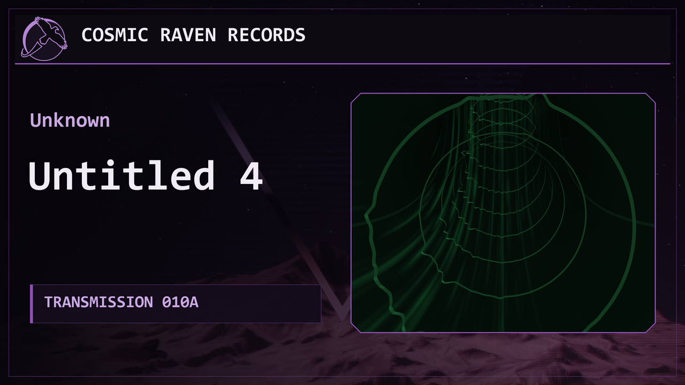

I should probably clarify that title before somebody sends me a music visualizer from 1998 and ruins my afternoon.
I did not invent music visualizers.
What I finally have is something that feels like the thing I wanted, instead of another perfectly respectable arrangement of bars doing bar things.
Getting there involved an AI assistant, several test tracks, an unreasonable number of glowing pipes, and me repeatedly discovering that “make it more like the thing in my head” is not a technical specification.
Who knew.
Cosmic Raven Records already had a working video generator.
Give it a song, a transmission number, an artist and a title, and it would assemble the intro, music video and thumbnail. The branding and little transmission readouts were already there. The visualizer had frequency bars, a spectrogram and an oscilloscope.
It worked.
The problem was that different songs still looked a little too much like the same video having different levels of enthusiasm.
Louder song? Bigger bars.
Quieter song? Smaller bars.
Useful information. Not quite the experience I was after.
I wanted the music to leave a stronger visual fingerprint. Something where changing the song changed the character of what you were looking at, rather than just how hard everything was bouncing.
Also, I wanted it to look cool.
That was definitely in the requirements.
I started working with Hermes on isolated experiments instead of immediately ripping out the working renderer. We could make a short preview, look at it, argue with imaginary geometry, and leave the rest of the project alone.
The first direction I liked was something called Spectral Relief.
Precise shapes, but with that lingering phosphor glow where the previous signal takes a little time to disappear.
The important part was what happened when the music stopped.
I did not want a screensaver that kept entertaining itself after the song had left the room. I wanted the existing light to fade away, without inventing new movement to cover the silence.
That became one of the rules we kept carrying through the experiments.
Then I added more music.
The original test was Synthwave-1.wav. I also brought in Écho de l'Action-A.wav and Shadows of the Empire (Cover).wav, because a visualizer that looks good with one convenient synthwave track has not necessarily accomplished very much.
The comparisons helped.
They also made it obvious that the differences needed to go further.
Somewhere in there, the flat frequency display started becoming a tunnel.
Which was much more interesting.
Instead of watching the music bounce around in front of me, I could feel like I was moving through it.
Naturally, once that worked, I wanted it to move faster.
Then I wanted it to bend.
Then I wanted it to feel like a roller coaster when the music got chaotic.
This is how a sensible equalizer project gets plumbing.
One of the early versions had these moments where several tunnel openings seemed to arrive from different directions. During a busy section of Shadows, that was briefly pretty great. It had exactly the slightly alarming “I don’t know where I’m going” feeling I was trying to describe.
Unfortunately, there is a difference between not knowing where the tunnel goes and not knowing which of the floating circles is supposed to be the tunnel.
We found that difference.
I liked the chaos. I still needed a path.
That became a surprisingly specific requirement: calm music should feel like a coherent route, and intense music should make that route more unpredictable without making the entire scene stop making sense.
I was also complaining about the edges looking pixelated by this point.
Because apparently I can be lost inside a hypothetical music pipe and still notice its antialiasing.
The rib edges got cleaned up. The path got more coherent. We tried deeper bends.
It was improving, but I still could not quite explain the version I was imagining.
At one point I was ready to stop chasing it. We had something good, and I did not have a useful reference to hand over beyond increasingly elaborate descriptions of how I wanted traveling through sound to feel.
Very helpful project management on my part.
Then we started messing with the spectrogram.
The obvious place for it was behind the tunnel, as another moving background element.
That looked better, but it still felt like separate things sharing a screen.
The question that changed the whole thing was whether the spectrogram could wrap around the tunnel walls instead.
Yes.
That was the moment it started feeling right.
The frequency pattern was attached to the walls. As the camera moved forward, it felt like traveling past recorded sound instead of having a scrolling graph politely follow me around.
The tube had a surface now.
The leading edge initially had a visible cutoff in the distance, so we feathered that out. Then the pattern was too transparent, so we made it stronger.
Later I asked for it to be a little more transparent again.
I have developed very firm opinions about the visibility of fictional infrastructure.
The oscilloscope did not survive this process.
It had become a little knot of lines in the corner that technically represented something but mostly looked like it needed untangling.
We removed it.
The video improved immediately.
Sometimes the correct additional visual element is one fewer visual element.
Then I asked for one more experiment.
I wanted proper turns.
Not a tunnel that sort of leaned left for a moment and then changed its mind. I wanted approximately 90-degree turns, like moving through an endless maze of pipes whose route changed with the music.
Which meant the solution could not just be more aggressive movement of a flat image.
We ended up with an actual 3D pipe route, with straight sections and rounded elbows that the camera travels through.
That finally gave the movement something solid to follow.
There was just one small problem.
The ribs had become too smooth.
The ragged edges were important. Those were the bits that made it feel like the music was physically shaping the tunnel instead of merely providing a soundtrack to somebody’s sewer inspection.
So the recorded frequency profiles became actual shaped rib geometry.
The uneven edges came back.
Now I had a coherent pipe maze with audio-shaped ribs and spectral history wrapped around the walls.
By this point the experiment folders had reached v0.13.
I approved the look, asked for one last adjustment to the wall transparency, and we moved on to putting it into the real project.
That also meant dealing with the framing and thumbnail.
I did not want to lose any of the existing transmission information. The artist, track title, archive status and other readouts were already part of Cosmic Raven Records. Making a prettier screen was not an excuse to quietly throw half of them away.
The new presentation kept the raven emblem and went with purple framing around the visualizer. We rearranged the existing information so it looked like it belonged together. The bottom frequency contour stayed, and the thumbnail combined the artwork with a frame generated from the actual track.
The goal was a recognizable Cosmic Raven Records transmission, not a completely unrelated demo wearing its name tag.
The old entry point also still works.
The workflow is basically still:
Audio file
Transmission ID
Artist
Track title
↓
Video + thumbnail + metadataUnderneath, however, the visualizer had become a fairly different animal.
We tested the integrated version, made a complete song render, and had something I was happy with.
Which obviously meant I had a few minimal changes.
The camera needed to rotate.
I know.
We had just spent all that effort making it clear where the camera was going, and now I wanted to turn it upside down.
But the rotation mattered. Forward movement and corners were good. A little roll would make the whole thing feel less like a camera bolted to a shopping cart.
I wanted it to rotate in one direction, and I wanted the music to decide when it happened.
Full rotations were fine if the music sustained them. Constant spinning was not.
The other request was for the spectral pattern itself to flow around the tube, independently of the forward travel.
That gave us another comparison to look at.
I preferred B, which combined the camera roll with the wall-pattern movement.
Then I had one more nitpick: the camera should push forward a little harder during the faster-feeling sections.
Not simply run the entire video at a higher speed. React more when the song actually felt more active.
We added a small surge driven by changes in the sound, with more emphasis on forward travel and a smaller accent on the roll.
That was the last adjustment.
The final behavior is roughly:
Music sustains the motion → camera rolls clockwise
Activity picks up → stronger forward push
Spectral pattern → flows around the walls
Quiet passage → roll can pause where it is
True silence → motion stops, remaining light fadesThe camera does not politely reset itself upright every time the song gets quiet.
If the music leaves you sideways in a glowing pipe, that is where you stay for the moment.
The text and bottom contour stay level, though. I wanted a rotating camera, not a transmission ID that requires turning your monitor over.
The accepted version landed at v0.15.
We promoted that into the production renderer and generated a fresh complete 010A master, with the previous version kept separately so “new and improved” did not also mean “hope you didn’t want the old one.”
There was some less glamorous work in all of this too.
Making sure the complete song is the default instead of accidentally shipping a preview. Keeping the original intro audio. Checking that artist names and titles survive the renderer without missing characters. Making sure a failed export does not casually destroy the previous files.
Also checking the actual encoded video and audio, rather than assuming that because a command exited successfully, everything inside the resulting MP4 must be wonderful.
The production suite finished with 48 passing tests. The complete new master passed the media checks, including the visible text and silent ending. The code and handoff also went through independent reviews.
That does not make a test suite the final authority on whether a music video looks cool.
But it does help establish that the cool-looking thing still contains the song, the right words, and an ending that behaves itself.
I am really happy with where this landed.
It still has some of that old Windows music visualizer feeling I was chasing. The part where you could put on a song and spend an unreasonable amount of time watching shapes react to it.
Now the shapes have become a place you travel through, and the music gets to mess with the architecture.
I am not claiming nobody has ever made anything similar.
I just finally have the Cosmic Raven Records visualizer I kept trying to describe, including several details I apparently needed to see go wrong before I could explain them properly.
It started with wanting a more interesting equalizer.
I have a music-driven pipe maze now.
I’m keeping it.
Next: Put more music through it, make some transmissions, and try to leave the imaginary plumbing alone for a bit.